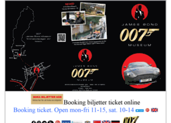

007museum.com
I really hate this website. It’s just about everything I don’t like about a website into one really bad site. The layout of the landing page took about a minute or two to load, and it is all over the place! The text is ok at best in some places, but is very off center. This is a very overwhelming site, combining that with multi-colored text, there is too much information on this landing page. I think overall this is one of the worst sites I’ve seen. I barely understand what is going on and I do not having to scroll the webpage to the right side just so I can read everything that is on it. I think some of the images are very hit or miss with quality/relevancy, the content is all over the place.
-Gatesnfences.com
This website, just like the 007 Museum website is overwhelming. I am instantly bombarded by text and there is too much information for me to want to be on this website landing page any longer. I feel like the images would be more helpful if they were on a separate page. I get what they are trying to accomplish with the images, but if this information wasn’t on the landing page and on a separate page, it would look a lot better. There’s also the issue with the multicolored background, but the text layout looks significantly better than the previous website.
www.ghiradelli.com
I love this website because it is aesthetically pleasing to my eye all around. I love the colors that are used on the web page along with the layout of the text. I enjoy seeing a promo code section not in the dead center of the webpage, but on the left side. They have beautiful, high quality images attracting my focus along with a featured products section. It is clear, easy to understand, and I know what they have/offer to consumers.
-Haagendaz.us
I think this landing page is interesting because it is simple, straightforward, and to the point. These are beautiful images with amusing call to action text. I love their video down below when you scroll down and how it doesn’t automatically play the volume. The images are symmetrical and flow together well. I also appreciate the news articles at the bottom of the landing page, showing what this brand is all about (not just their ice cream!).